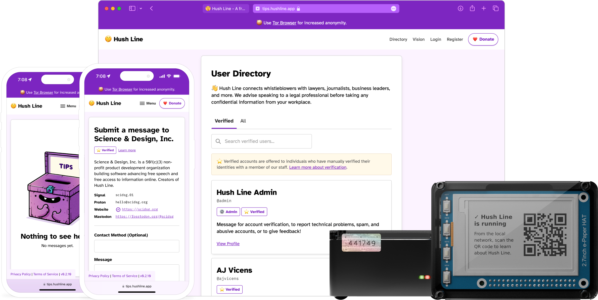

We connect whistleblowers with organizations and people who can help.
Hush Line provides anonymous reporting for journalists to newsrooms, managers to board rooms, and educators to classrooms.
One of the top reasons people fail to report their concerns is fear of retaliation. Whether you're a journalist, school administrator, or an employer, your communities want to help but aren't always able to take on the associated risks.
Hush Line is a safe way for anyone to share information without jumping through hoops or compromising their identity.
Who is Hush Line for?
Journalists & Newsrooms
The easiest way to receive anonymous tips from the public.
Educators & School Administrators
A safe and simple tool for private student reporting.
Employers & Board Rooms
Get ahead of any behavior that could lead to compliance violations.
Why Hush Line?
Human Verified Accounts
We offer verified accounts for organizations and individuals so you know your message is going to the right place.
Request VerificationStrong Privacy and Security
From offering users two-factor and using their own PGP key to data being encrypted at rest on our server and Tor onion site support, we go beyond conventional measures to protect you and your data.
Free and Open Source
Hush Line costs nothing to use. Our software is open-source, so you can verify or contribute to the code, too!
Mailvelope Integration
Bring the power of PGP to your web browser. Decrypt messages directly in the app with the Mailvelope browser extension for Firefox and Chrome!
The Personal Server
For increased threats and all skill levels, the Personal Server is a Tor-only copy of the entire Hush Line platform that you own and control.
Shop NowSupported By
Data Empowerment Fund
Open Tech Fund

Hush Line for Business
Are you an organization that needs your own dedicated Hush Line service? Get in touch for more information!
Contact UsFrequently Asked Questions
-
Hush Line requires no personally identifying information (PII) for tip line owners to use the service, including an email address.
We offer an Onion service for users with advanced privacy needs, which can be accessed using the Tor Browser, making connections and activity completely anonymous.
Message submitters are not required to create an account and may also choose to use our Onion service to access the app.
The Onion address for this site is:
j5kv55yiu3rneydqn4f35kyhejbq3fhkkm7glg5nbtvxgaxthou7g2ad.onionThe Onion address for the app is:
hyewn4dvbedq7ooe3oxrhpceljd7ncfyeyts2c7nwsjp34i46smbzwid.onion -
Hush Line uses OpenPGP.js for client-side encryption, giving users who add their public PGP key end-to-end encryption for their messages. Users who disable JavaScript use server-side encryption.
Adding your PGP key enables only you to have technical access to your decrypted messages. Neither the server administrators nor an attacker with access to the server can learn their contents. Setting up PGP is easy using our getting started guide.
Hush Line uses TLS encryption for data in transit, message data is stored encrypted at rest on our database, and server access is limited to relevant members of the technical staff.
-
If the individual submitting a message feels comfortable enough to include a contact method, they may choose to.
For anonymous, indirect two-way communication through Hush Line, someone submitting a message may create a Hush Line account and leave the receiver their username.
This is distinct from chatting with a known contact in your address book and returning to an ongoing message thread to jump back into a conversation.
If having a dedicated message history is important, one solution could be for both parties to create Hush Line accounts that will only be used for that conversation.
We strongly encourage both parties to upload their public PGP keys if pursuing two-way communication through the platform.
-
Neither us scrubbing IPs nor you using Tor and Signal are silver bullets, and there are many ways to deanonymize yourself. Take, for example, the case of Apple v. Andrew Aude. He was using Signal on a work-issued phone. Even if he was using Tor in combination, if your employer can just take screenshots of your device, no amount of encryption or technology will keep you private. The lesson: never use your work-issued devices for anything you want to remain private or an employer-owned network to connect to a site you want to keep private.
If connecting to Hush Line using our clearnet address, attackers who can observe network connections—including your DNS or internet service providers—may be able to see your IP address and the address to which you're connecting. They *will not* be able to see which page you're on, who you're messaging, or the contents of your message.
When thinking about blowing the whistle, always consider: What are you protecting, and who are you protecting it from? Is it a message to the local newspaper about the noisy neighborhood construction, an abusive business owner, or a corrupt local official? You can connect using our clearnet address and have confidence you'll remain anonymous.
Or are you sharing national security secrets from within an authoritarian government that censors their internet and murders journalists? This is not legal advice, but a reasonable, though possibly prohibitively complex, way to ensure anonymity may be to somehow acquire and use a Tor-only amnesiac operating system like Tails or Qubes with a Whonix disposable VM on an uncompromised burner device where you'll encrypt your message locally before ever connecting the device to the internet. When you connect to the Hush Line Onion service, it should be on an uncompromised network you do not own, to which you are not related, and that isn't near your residence. Oh, and don't go anywhere that uses surveillance cameras or biometric identification, only use cash and don't go to an ATM near where you'll buy the device, leave your primary cell phone at home, don't check in to any location requiring your real name or ID, and if you have a car with a GPS in it, don't drive it. Reasonable, right? This might sound like a lot, but the point is that there is no one way to use Hush Line or "perfect" anonymity. You must consider your own situation uniquely. No matter what tool you use to send a message, if you share sensitive enough information about an individual or entity with enough time, money, and power, operational security will always be critically important.
Sometimes, you can get in trouble by just being in the wrong place at the wrong time, like when this guy was arrested for riding his bike past a crime scene and became a suspect. Law enforcement subpoenaed Google for information about any device in that location in a given time period, and that was enough to bring the cops to his door. This raises the question: If you're sharing information of great enough importance, should you use a computer, phone, or operating system built by a major corporation that could be subject to such subpoenas?
Sometimes, just having software on your phone is enough to make you suspicious, like in the recent case against Ola Bini in Ecuador.
If you are considering blowing the whistle, it's always good to seek the advice of a legal professional familiar with your country's laws. If you do not have anyone you can contact locally, you may contact a firm specializing in whistleblower cases, which might be able to connect you to someone who can help.
-
Signal is great, but it's not anonymous. For someone to send you a message, they must first:
- Have an active phone number.
- Sign in to an app store, requiring an email address.
- Download Signal.
- Register their phone number. (Yes, you still have to do this, even with usernames.)
- Create a username.
- Find your username or phone number.
- Contact you.
Signal is a perfect tool for talking to someone you know or with whom you have a baseline level of trust. It is linked to your phone, and you need a device with a phone number to start using it.
In contrast, Hush Line works with what's already on your phone or computer. All you need is a web browser to send a message anonymously. The end-user submitting a message doesn't need to create an account, and needs no technical proficiency or prior knowledge to use the app immediately.
Hush Line aims to be the first step for whistleblowers. When they don't know what to do first or next, a safe and effortless way to contact the right person should be the least of their worries. Once a baseline level of trust is established, other tools like Signal are more appropriate.
-
SecureDrop is a robust whistleblowing platform whose architecture is necessitated by very specific use cases: A.) To safely manage files sent by anonymous people so that a device or network isn't accidentally compromised, and B.) To provide a censorship-resistant and anonymous method of sending those files. When someone submits a message, an account is created for them, allowing two-way communication. To use SecureDrop:
The tip line owner must:
- Do A LOT. SecureDrop is an "on-prem" solution, requiring you to store multiple servers locally, all focused on isolated tasks, using a dedicated network. Think of SecureDrop as a fixed workflow for receiving and handling potentially malicious files. You must do all of the things correctly to assume safe operation. It requires a lot of time, which means a lot of money. The installation and setup of the system, in most cases, needs to be conducted by a member of the SD team, with service contracts helping to ensure proper maintenance of the infrastructure.
The message submitter must:
- Learn how to use SecureDrop.
- Download Tor Browser.
- Find the correct Onion address for their recipient.
- Submit a message.
- Save their account credentials.
- Check back for progress.
Hush Line is not a replacement for SecureDrop. Instead, it's for organizations who might not have the staff required to manage such a system or need nation-state levels of defense for all of their anonymous tips. We simplify our threat model by being a text-only service, meaning there is no possibility of receiving files that could harm your computer or network.
We're a managed service, so you don't have to worry about maintaining physical infrastructure or learning new workflows. In fact, to use Hush Line, you don't even have to log back into the service after setting it up. We can deliver messages directly to your email inbox, so you can set it, forget it, and never miss a beat. Users can add their own public PGP key, giving them end-to-end encryption and ensuring messages cannot be read by anyone but them.
Hush Line is also available on a clearnet address, or through our Onion service. Using the browser already on your computer or phone, you can easily submit a message without ever downloading a new app. Users who need higher levels of anonymity may optionally use our Onion service, requiring them to download Tor Browser. This flexibility allows for our service to be used for benign use cases or elevated threat levels.
-
While open-source, forking SecureDrop would require significant rework. Building a new solution allows us to optimize Hush Line as an easy-to-use hosted service.
-
We use Python and the Flask framework because they're well-documented and supported. The developer ecosystem is rich with extensions for everything from user authentication to message encryption. Python is also one of the most used languages, making the project accessible to a greater number of engineers.
-
Receiving files comes with significant risk, and the functionality is only sometimes necessary. It can lead to compromising your device, network, and any other device connected to it.
For the sender, acquiring and sending files is one of the riskiest things they can attempt to do. Take the case of Reality Winner, who was caught because the document she shared detailing Russian interference in the US elections could be easily traced back to the originating printer, and from there, it was trivial to learn who printed it. She spent four years in prison. Or of Chelsea Manning, whose chat logs revealing war crimes led to the evidence bringing her conviction. She spent seven years in prison. Or of Edward Snowden, who, even with highly technical knowledge and after using tools like Tor and Tails, shared thousands of NSA files documenting warrantless surveillance programs and more and is now exiled in Russia.
Moreover, we challenge the need to immediately receive files by asking the question: Should you be receiving files anonymously without any baseline level of trust? If so, there are tools for that, but we don't recommend starting with them.
-
Hush Line offers human-verified accounts for journalists, organizations, and public figures so you can ensure you're communicating with the right recipient. Do you need to verify your account? Send us a message!
-
Yes! In 2024, Hush Line's managed service, Personal Server, and self-hosted version received a security audit from Subgraph, sponsored by Open Tech Fund's Security Lab. View the report.
-
See something, say something! Submit a vulnerability report if you find a security issue, and we'll address it immediately! Submit a report!
-
👉 Have a look at our draft whitepaper.
-
Yes! If you want to use a credit or debit card, you should use our Open Collective account. For cryptocurrency donations, you can use the following addresses:
ZEC: t1fWfUwLjsfZY5xnajjPHqQxfB3nj8hNggR
BTC: bc1qm30x3zwm5wh2e07nfuqx3qme8jtzpl3qhn5sm7
LTC: ltc1q33ycseddyfs0242kg07w3th5f066fekvheley6
Pricing
If you need more than what our free tier provides, we have options to meet your requirements! This information is subject to change at any time.
Core
Pro
Super User
Contact Us
Thank you for stopping by! Hush Line is free and open-source product by Science & Design, Inc., a 501(c)(3) non-profit in the US. Get it touch using one of the channels below!